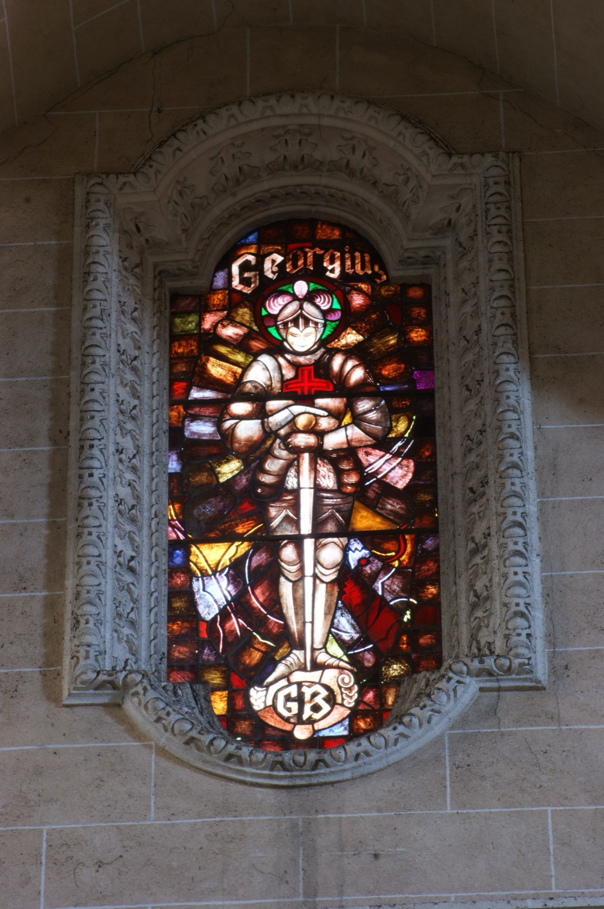

Sant Jordi (s. III) va ser un militar romà educat en la fe cristiana que arribà a formar part de la guàrdia personal de l’emperador Dioclecià. Com que no volgué participar en la Gran Persecució dels cristians decretada per l’emperador, renuncià a la milícia, repartí els seus béns entre els pobres i es dedicà a la predicació. Va ser detingut i torturat de moltes maneres perquè renunciàs a la seva fe, i finalment executat. Segons la tradició, hagué de ser executat tres vegades perquè les dues primeres ressuscità.
La seva gran fama prové de la llegenda medieval del drac. Segons aquesta tradició, prop d’una ciutat hi havia un llac on vivia un drac pestilent que s’alimentava cada dia d’una ovella i una donzella de la ciutat. La donzella era escollida per sorteig i un dia li tocà a la filla del rei. Quan es dirigia cap al llac lamentant-se del seu destí, es trobà amb sant Jordi, que s’oferí a salvar-la i acabar amb el drac. Sant Jordí capturà el drac i, quan tota la ciutat es convertí al cristianisme, el rematà.
A partir d’aquesta llegenda, durant l’edat mitjana sant Jordi esdevingué un model ideal de cavalleria i des del segle XII apareix en nombroses tradicions ajudant els cristians en els combats més decisius. Així, per exemple, el rei Jaume I conta al Llibre dels Fets que el primer cavaller que entrà a Ciutat durant els combats del 31 de desembre de 1229 va ser un cavaller blanc muntant un cavall blanc, a qui identificà amb sant Jordi.
En aquest vitrall se’l representa com un cavaller amb armadura blanca i una creu vermella al pit, coneguda com a Creu de Sant Jordi, símbol que segons la tradició duia en algunes de les seves aparicions medievals. Les inicials GB de la part inferior del vitrall fan referència al donant que en finançà la confecció.